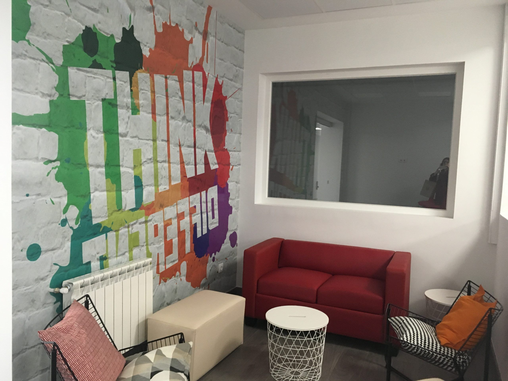

Espacios para aprender
Un entorno para atender, preguntar y avanzar paso a paso en el aprendizaje.
Lo mejor del centro no es solo dónde está, sino cómo te sientes dentro: acompañado, escuchado y con espacio para encontrar tu lugar.

El instituto está situado en el distrito de Tetuán, cerca de transporte público, comercios y espacios del barrio. Para mí, esa conexión hace que el centro forme parte de la vida diaria.
Un entorno para atender, preguntar y avanzar paso a paso en el aprendizaje.
Aprender también es compartir ideas, escuchar otras miradas y trabajar en equipo.
La vida del centro se construye en el día a día, desde el respeto y la participación.
Dar forma a una idea, probar caminos y aprender de cada proceso y de cada proyecto.